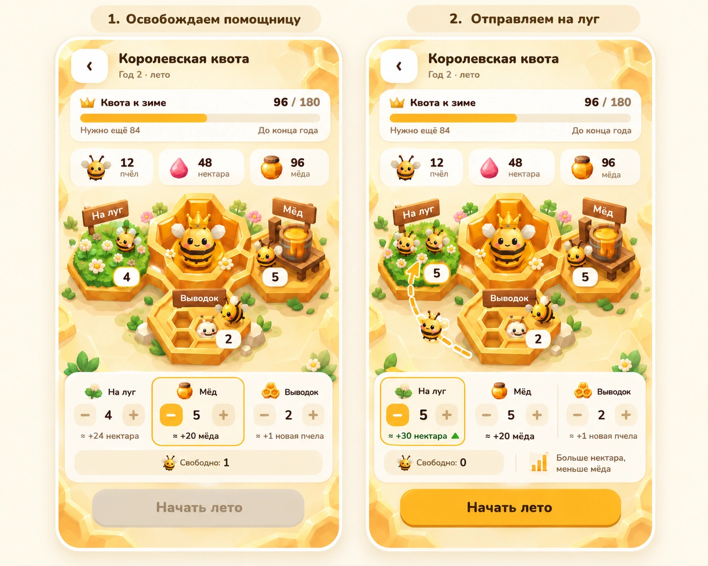
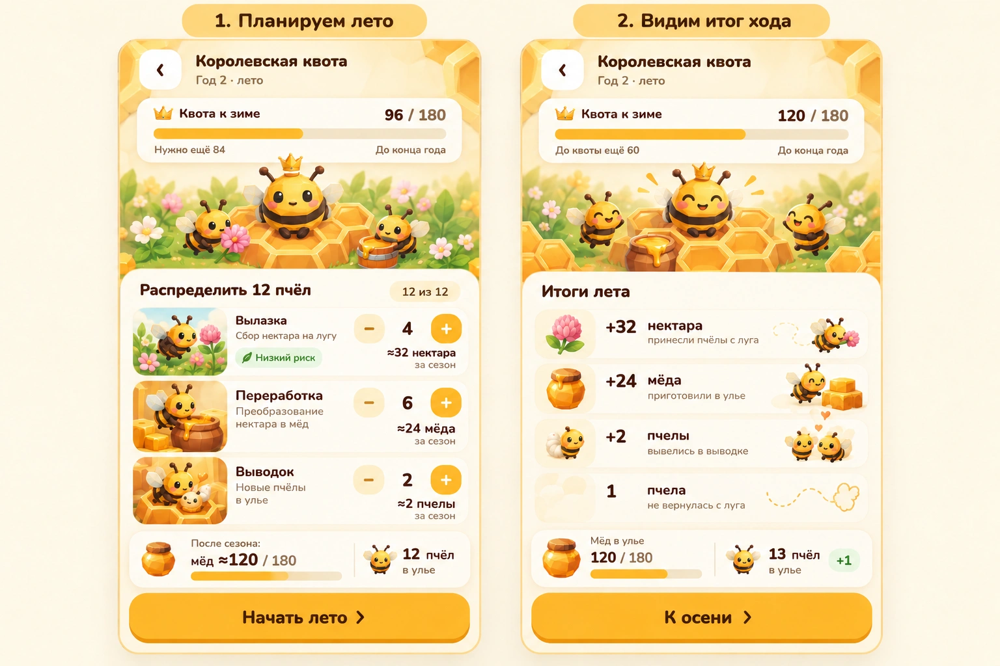
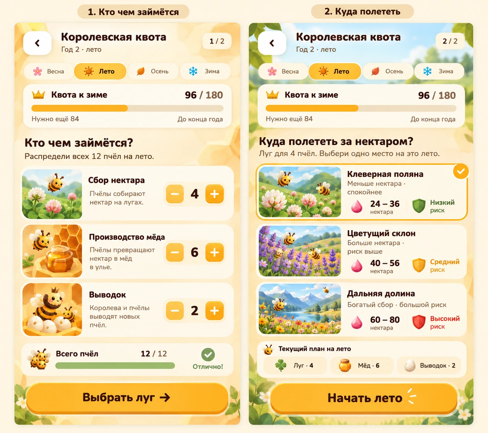

Королевская квота · как это играется
Сохранённые черновики. Главный экран перегружен; новая основа — существующий улей.
Три варианта управления и обратной связи. Каждый лист показывает два состояния; это концепты, не проверенный баланс.
A · Работы прямо в улье
Назначаем помощниц на работы прямо в сцене улья. Два кадра показывают перенос свободной пчелы.

B · План и результат сезона
Сначала видим план, затем итог сезона: что получили и как приблизились к квоте.

C · Подготовка в два шага
Два последовательных решения: распределить пчёл, затем выбрать луг и запустить сезон.
